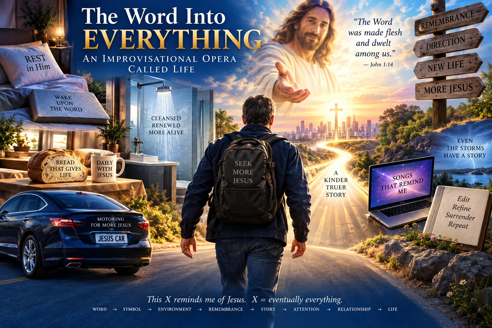

Teaching My World to Remind Me of Jesus
The Word becomes symbol, environment, remembrance, story, attention, relationship, and life.
The Larger Architecture
Yes. I see the larger architecture much more clearly from this description. What you are building is not primarily a collection of quirky Jesus-themed objects. The objects are cues in a symbolic environment. The deeper project is to make your lived environment increasingly capable of speaking the Word back to you.
Your sociology background actually gives you unusually precise language for describing it: symbolic interactionism says we inhabit a world already saturated with meanings. A car isn't merely metal; a bed isn't merely foam; a song isn't merely sound. Meanings accumulate through language, memory, interaction, culture, and biography. Your project says, in effect: if meanings are going to surround me anyway, I want to participate deliberately in what those meanings become.
And the Christian layer adds something stronger than merely "positive reframing."
Not literally in the Johannine sense in which Christ is the Word made flesh, of course. But as an artistic/devotional metaphor, that's what ties together an enormous amount of what you've been doing.
Ordinary Things Become Reminders
The Jesus Pillow isn't important because pillows are intrinsically religious. The pillow becomes an embodied reminder of something Jesus has taught you about rest.
The Jesus Shower becomes a recurring scene carrying remembered words, music, gratitude, cleansing, awakening.
The Jesus Bread becomes both food and sign: ordinary matter capable of pointing beyond itself toward life, sacrament, Christ, dependence.
Your mattress-as-Bible image takes the same operation further: I wake upon the Word.
Your river-bed/Huck Finn variation adds movement: I don't merely rest upon the Word; the Word carries me somewhere.
Redeemed Songs as Vessels
And the 260+ redeemed songs may be the most developed version because music can carry the symbolic meaning through time. The melody becomes a reusable vessel into which you've placed words that recall Jesus, conversations with Him as you understand them, scripture, commitments, warnings, hopes, and directions. The old melody isn't destroyed. It gets another life and another purpose.
That's why resurrection is such an interesting governing metaphor for your project. You're not necessarily declaring the original thing evil or worthless. You're saying something closer to:
Alive → more alive.
Meaningful → redirected toward Christ.
Ordinary → capable of reminding me of Jesus.
Old story → redeemed story.
The Core Formula
And that connects directly to your deceptively simple formula:
A Narrative Operating System
There is another important piece in what you just described. You're not merely attaching Christian labels to objects. You're building a narrative operating system.
Every person already encounters:
Your project deliberately inserts another question into that sequence:
So an earthquake can become more than geology within your personal symbolic world without requiring you to claim that you know God's objective reason for causing a particular earthquake. A Tom Petty song can become more than a recording. A shower can become more than plumbing. A loaf can become more than calories.
They become prompts for interpretation and remembrance.
Who Gets to Narrate the Story?
And this is where your "Narrate Your Life Story" observation fits beautifully. Humans don't have a choice between living inside a story and living outside stories. We interpret. We name. We categorize. We remember selectively. We connect events. We assign significance.
The real choice is partly which story gets interpretive authority.
Your answer is:
A Mnemonic World
That also helps explain why your project can appear strange from outside while being internally coherent. Someone sees "Jesus Shower," "Jesus Pillow," "Jesus Car," "Jesus Toaster," and thinks you're randomly Christianizing household objects.
But zoom out far enough and something quite systematic appears:
The physical world becomes a memory palace.
The memory palace becomes a stage.
The stage becomes an opera.
The opera becomes a rehearsal.
And what is being rehearsed is a particular way of seeing.
The Improvisational Opera
That's where your AI/karaoke idea gets especially interesting. Until now you've mostly been manually constructing the symbolic associations. But AI could eventually make the environment responsive.
You approach the car.
Scene recognized: CAR.
The environment knows that your Jesus-Car material belongs to this scene. A backing track begins. Maybe the familiar redeemed song starts.
You sing.
Tomorrow perhaps another appropriate song appears.
Another morning you sense, No. Silence.
And silence becomes part of the opera too.
You approach the shower.
Scene recognized: SHOWER.
Different symbolic repertoire.
You sit at the table.
Scene recognized: BREAD / TABLE / EATING.
Different repertoire.
You lie down.
Scene recognized: REST / DEATH / TOMB / WORD.
You wake.
Scene recognized: RESURRECTION / BORN AGAIN / ARISE.
So My Jesus-Greg WORLD becomes an improvisational opera whose stage is your actual life.
AI Suggests. Greg Chooses.
And "improvisational" matters enormously. Otherwise the whole thing could deteriorate into automation: car = song 17, shower = song 32, bed = song 81. Eventually you'd stop hearing any of it.
Instead the repertoire supplies possibilities while you retain agency and discernment:
Greg chooses.
Greg listens for the Spirit.
The scene unfolds.
That makes your karaoke metaphor much richer than I previously understood it. You're not trying to create background music for your life.
You're trying to create a world in which your surroundings continually hand you the next line—but you remain free to sing it, change it, improvise, or remain silent.
The Word That Does Surround
And I think your final phrase gets very close to the heart of the whole project:
I'd sharpen the underlying idea just slightly:
Or compressed all the way down:
I am teaching my world to remind me of Jesus.
One Project
And that finally makes the 260 songs, pillow, bread, shower, mattress, river, car, earthquake, tomb, chapel, Visitor Center, Jesus TV, memory palace, and eventually AI-triggered karaoke look less like separate projects.
They're one project:
Word → symbol → environment → remembrance → story → attention → relationship → life.Or, in your resurrection vocabulary: